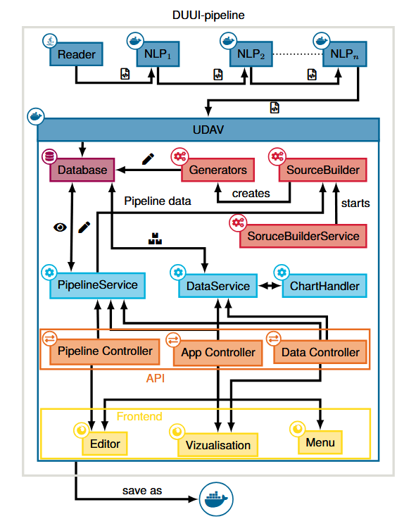
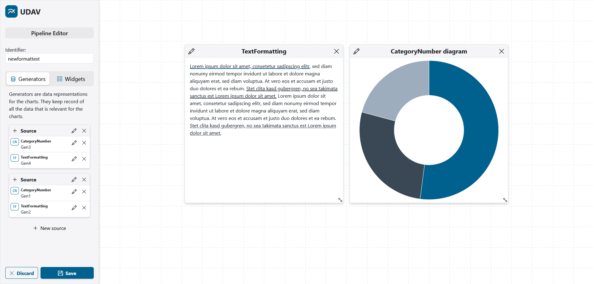
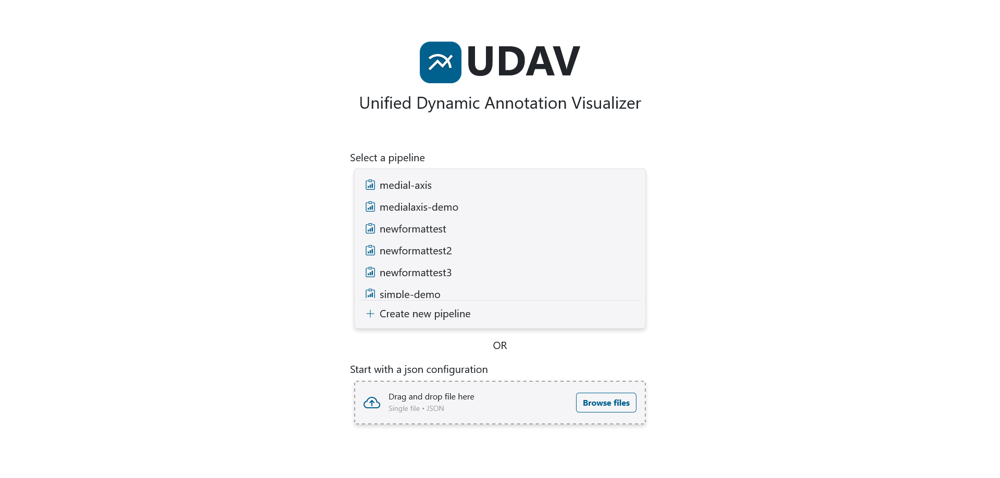
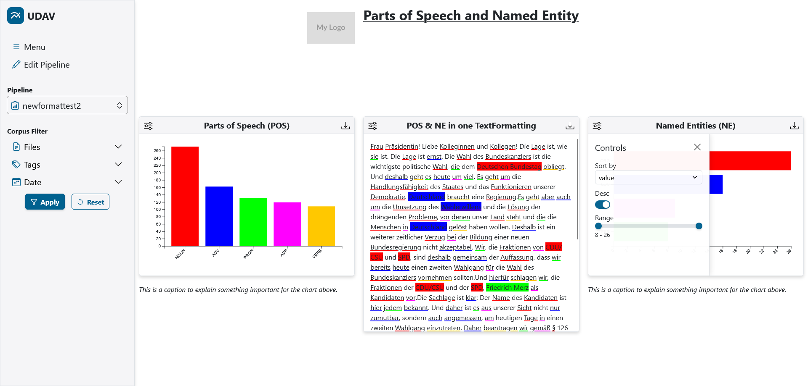
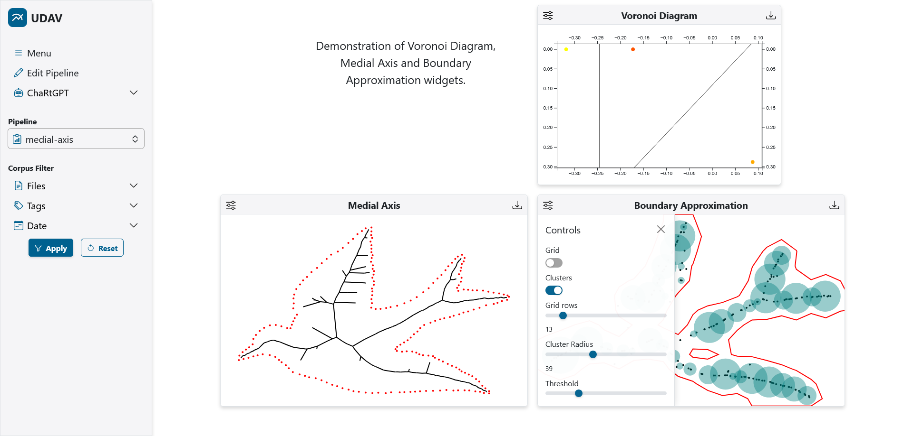
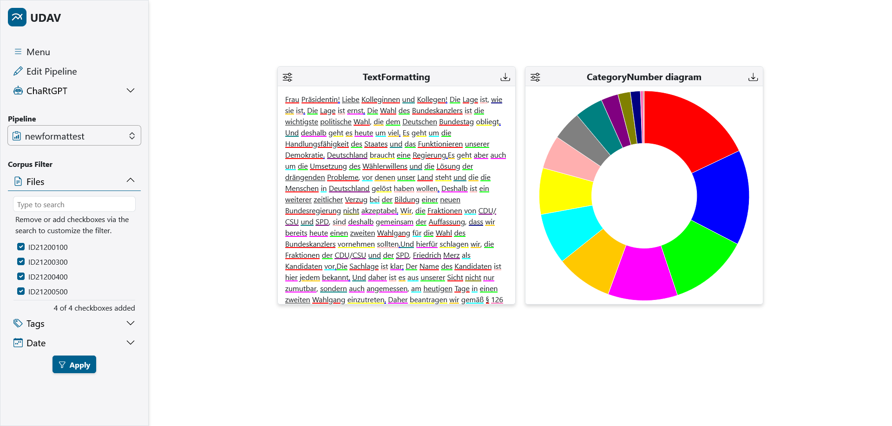

Text Technology Lab · Goethe University Frankfurt
Unified Dynamic Annotation Visualizer
Turn UIMA annotations and your own JSON/XML data into reproducible, interactive dashboards — described by a single pipeline definition, rendered in the browser, exported as SVG, PNG, LaTeX/TikZ, CSV or JSON, and available headlessly through a batch API.
Overview
The automatic and manual annotation of unstructured corpora is a routine task in many scientific fields, but few tools visualize the result dynamically: for a new corpus, a new project or a new question, someone usually hand-codes a chart. UDAV closes this gap. A pipeline — a small JSON document — declares which data is read (sources), how it is aggregated (generators) and how it is shown (widgets on a grid). UDAV builds the data once, stores it per pipeline in PostgreSQL and serves it to an interactive web view that filters, pages, zooms and exports.
Schema-based
Pipelines are plain JSON. Create them in the visual editor, drop them into a folder, or upload them — they import at start-up and can be versioned like code.
Reproducible
Every export embeds the active corpus and chart filters as metadata, the TeX output is generated deterministically from checked-in font metrics, and the batch API produces byte-identical artefacts to the UI.
Big-data ready
Corpora enter through DUUI with parallel workers and PostgreSQL COPY; generator data is pre-aggregated, so the view only ever loads what a widget shows.
UDAV was developed at the Text Technology Lab and is described in a paper at LREC 2026. A public instance with the demo pipeline runs at demo.udav.texttechnologylab.org.
Feature highlights
Headless batch export
One request exports a widget or a whole pipeline in any of the five formats, rendered by pooled headless Chromium sessions that run the UI's own export code. Concurrency, admission control, per-request metrics and a reproducible evaluation harness are built in.
Batch export API →VecTikZ — SVG to TikZ
Charts leave UDAV as LaTeX/TikZ, not as bitmaps. The bundled VecTikZ converter maps SVG shapes, paths, text, gradients, patterns, markers, clipping and CSS into a standalone TikZ document — and is available as a stand-alone web demo.
VecTikZ →Custom JSON / XML sources
Besides UIMA annotation types, any JSON or XML file dropped into a folder becomes a source. A small key-mapping grammar adapts your field names to a generator's; XML is converted to JSON on import.
Data sources →Grouped generator templates
Set "generatorGroup": true on one generator and UDAV instantiates it once per top-level key of the source file — one dataset per document, corpus slice or experiment, without repeating the definition.
Paginated widgets
Widgets bound to a grouped generator get a pager: step through datasets, jump via a dropdown, and export the current page or all pages at once as a ZIP.
Pagination →ChartBot
An LLM assistant lives in the view. Pick a model, attach any chart as an image and ask what it shows; answers are rendered as Markdown. Works with any Open WebUI-style endpoint.
ChartBot →Visual pipeline editor
Drag widgets onto a 24-column grid, configure sources and generators in forms, save — UDAV rebuilds the pipeline's data and opens the view.
Editor →Corpus & chart filters
Restrict any view to a set of documents, and every chart to its own sort, range, limit or layer selection — all reflected in the export metadata.
Interactive view →Architecture
UDAV is a single Spring Boot application (Java 21) in front of a PostgreSQL database, packaged with Docker Compose. Everything below runs inside that one process: the importers, the generator builds, the REST API, the server-rendered pages and — for batch exports — the headless browser.
/api/chat is proxied to an external LLM server.Components
COPY. Tables are registered in uima_type_registry together with their super-type and row count; documents and their text (SOFAs) land in documents and sofas. Details..json and .xml file of a folder into the json_data table (XML is converted to JSON with org.json). The file name is the source's uri. Details.createsGenerators format and triggers a build. Pipelines created through the editor or the API take the same path.SourceBuildService instantiates the generators of a pipeline, lets them aggregate their data (setup) and write it (writeToDB) into a temporary schema, then atomically renames it to the pipeline id. A pipeline whose annotations are not imported yet is retried at the next start (MissingSchemaScanner).ChartHandler per widget type (the classes in org.texttechnologylab.udav.widgets) reads generator data, applies chart filters and corpus filters, and returns the widget's payload. Reference.
Getting started
There are two ways to run UDAV: with Docker Compose (nothing to install besides Docker) or from source against your own PostgreSQL. Both import the bundled demo and evaluation pipelines and their JSON sources at start-up, so the pipeline list is populated right away.
DEMO pipeline over an annotated German parliamentary corpus — no set-up required.Requirements
- Docker route: Docker with Compose v2. The image ships Chromium, so the batch export API works out of the box.
- Source route: JDK 21, Maven 3.9, PostgreSQL (the Docker stack uses 17). For the batch export API a Chromium, Chrome or Edge on the machine (otherwise Playwright downloads its own browsers on first use, about 1 GB).
- Clone the repository
git clone https://github.com/texttechnologylab/Unified-Dynamic-Annotation-Visualizer.git cd Unified-Dynamic-Annotation-Visualizer - Create your
.envfrom the example. Its defaults suit a laptop; the commented values are those used for large corpus imports.cp .env.example .env - Start the stack
docker compose up -d docker compose logs -f udav # watch the importersPostgreSQL and UDAV start; the UI is at http://localhost:8080 once the container is healthy (usually 30–60 s). The image bundles the demo and evaluation pipelines under
/app/pipelinesand their JSON sources under/app/sourcefilesJSON; mount your own folders and pointPIPELINE_IMPORTER_FOLDER/JSON_IMPORTER_FOLDERat them, or setPIPELINE_IMPORTER=false.
- Create an empty database. UDAV creates every table and schema itself; the user only needs the right to create schemas.
createdb udav - Tell UDAV where it is. Create a
.envin the repository root (do not copy.env.examplehere — its paths describe the Docker layout). Spring reads this file at start-up, so any property can go here, e.g.server.port=8081together withUDAV_BASE_URL=http://localhost:8081for the batch API.DB_URL=jdbc:postgresql://localhost:5432/udav DB_USER=postgres DB_PASS=postgres - Run it
mvn spring-boot:runThe first build downloads dependencies from Maven Central and JitPack. The UI is available at http://localhost:8080 once the log says
Started App. Running from the repository root,src/main/resources/pipelinesandsrc/main/resources/sourcefilesJSONare imported automatically.
pipeline_eval-*) work right away. Pipelines over UIMA annotation types (DEMO, simple-demo, the *Test* pipelines) show no data until a corpus has been imported with the DUUI importer; the log warns about each of them at start-up and they are rebuilt automatically once the annotations exist.Your first pipeline in five minutes
- Drop a data file. Save
counts.jsoninto the JSON source folder and restart (or setJSON_IMPORTER_REPLACE_IF_DIFFERENT=trueto refresh changed files on restart):{ "NOUN": 1061, "VERB": 492, "ADJ": 341, "ADV": 251, "PRON": 264 } - Create a pipeline. On the start page choose Create new pipeline, add a source and pick
counts.jsonas its annotation type, add aCategoryNumbergenerator via the + of the source card, then drag a Bar Chart onto the grid and bind it to the generator. - Save. UDAV stores the JSON, builds the generator data and opens the view. Export the chart from its toolbar, or fetch everything with one call:
curl "http://localhost:8080/api/batch/export/pipeline/<pipelineId>/svg" -o charts.zip
The same pipeline as a file, ready to drop into pipelines/ or to upload on the start page, is shown in Anatomy of a pipeline.
Concepts and the pipeline JSON
Everything in UDAV hangs off four concepts. A pipeline owns a list of sources, generators and widgets. Sources say where data comes from, generators say what is computed from it, widgets say how it is displayed. Several widgets can share one generator (a bar chart and a table of the same counts) and several generators can share one source.
extend other generators of its type (currently used by TextFormatting to overlay annotation layers).Anatomy of a pipeline
A pipeline is one JSON object. Ids are free strings (the editor generates Type-xxxxxxx); the pipeline id becomes the name of the PostgreSQL schema that holds its generator data, so keep it schema-safe. Widgets are laid out on a 24-column grid with x, y, w, h.
{
"id": "pos-overview",
"name": "POS overview",
"sources": [
{ "id": "Source-pos", "uri": "de.tudarmstadt.ukp.dkpro.core.api.lexmorph.type.pos.POS", "settings": {} },
{ "id": "Source-counts", "uri": "counts-per-doc.json", "settings": {} }
],
"generators": [
{ "id": "CategoryNumber-pos", "name": "POS numbers", "type": "CategoryNumber",
"source": "Source-pos", "settings": { "categoriesBlacklist": ["PUNCT"] }, "extends": [] },
{ "id": "CategoryNumber-doc-@ID@", "name": "Counts per document", "type": "CategoryNumber",
"source": "Source-counts", "generatorGroup": true,
"settings": { "colors": { "NOUN": "#4e79a7", "VERB": "#f28e2b" } }, "extends": [] }
],
"widgets": [
{ "id": "BarChart-1", "type": "BarChart", "title": "Parts of speech",
"generator": { "id": "CategoryNumber-pos" }, "options": { "horizontal": false },
"x": 0, "y": 0, "w": 8, "h": 6 },
{ "id": "PieChart-1", "type": "PieChart", "title": "Per document",
"generator": { "id": "CategoryNumber-doc-@ID@" }, "options": { "hole": 50, "legend": true },
"x": 8, "y": 0, "w": 8, "h": 6 },
{ "id": "StaticText-1", "type": "StaticText", "title": "Caption", "src": "POS distribution of the corpus",
"options": { "align": "center", "size": "5", "weight": "normal", "style": "italic", "decoration": "none" },
"x": 0, "y": 6, "w": 16, "h": 2 }
]
}| Key | Meaning |
|---|---|
sources[].uri | A fully qualified UIMA type (…lexmorph.type.pos.POS) or the file name of an imported JSON/XML source (counts.json). Anything ending in .json / .xml is a JSON-backed source. |
sources[].settings | Settings shared by all generators of the source, merged with each generator's own settings (see below). |
generators[].type | CategoryNumber, TextFormatting or MapCoordinates — the simple class name of a generator in org.texttechnologylab.udav.generators. |
generators[].source | Id of the source the generator reads. |
generators[].extends | Ids of generators of the same type this one derives from (a derived generator has no source of its own). |
generators[].generatorGroup | true turns the definition into a template instantiated once per top-level key of a JSON/XML source. Generator groups. |
widgets[].generator.id | The generator a chart widget reads; for grouped generators the template id (with @ID@). Static widgets carry src instead. |
widgets[].options | Widget-specific options, listed in the widget catalogue. |
Two legacy layouts are still accepted and normalised on read: a { "pipelines": [ … ] } envelope around a single pipeline, and generators nested inside their source as createsGenerators. The API always returns the flat form shown above.
Settings and filter lists
Settings are free-form per generator type (see the generator reference), but a few rules apply everywhere:
- Keys are case-insensitive (
featureNameandfeaturenameare the same setting). - Filter lists. A key ending in
WhitelistorBlacklistdefines a filter on the base key. Generators evaluatefilesandcategories, so the working keys arefilesWhitelist,filesBlacklist,categoriesWhitelistandcategoriesBlacklist. A whitelist restricts to the listed values, a blacklist removes them; file names are matched case-sensitively, categories case-insensitively.…WhitelistPriorityre-admits values a blacklist would remove. - Source-level settings are merged into every generator of the source. Scalars and lists of the generator win over the source, maps are merged recursively, whitelists of both levels are intersected and blacklists united.
sourceFilesWhitelist / sourceFilesBlacklist. The generators read filesWhitelist / filesBlacklist; write those keys in the pipeline JSON (on the source or the generator) to restrict a generator to specific documents.Widgets
Every interactive widget shares one frame: a toolbar with a Controls side panel (chart-specific filters), the widget title, an Exports dropdown, and — when the generator is a group — a pager in the chart area. Charts drawn with D3 re-render on resize, show tooltips, and most of them can be zoomed and panned. Static widgets have no data binding and are meant for titles, captions, logos and embedded media.
Interactive widgets
Static widgets
Which widget accepts which generator is enforced by the editor: the Generator dropdown of a widget only lists compatible generators.
Generators
A generator transforms a source into the data model of a family of widgets and writes it into the pipeline's schema. Three generators are bundled; new ones are Java classes. When several generators of the same source share categories, they share one colour palette, which is why a highlight text and a pie chart of the same annotations use matching colours.
CategoryNumber CN
Maps categories to a number and a colour — counts of a feature's values for a UIMA type (e.g. POS tags), or numbers read from a JSON source. Feeds Bar Chart, Pie Chart and Table.
| Setting | Applies to | Description |
|---|---|---|
featureName | UIMA | Short name of the feature to count. Auto-detected when omitted (coarseValue, posValue, value for POS; value, identifier, label, lemmaValue otherwise). Sub-types of the source type are included. |
filesWhitelist / filesBlacklist | both | Documents to count; default all documents of the corpus (UIMA) or all files of the JSON document. |
categoriesWhitelist / categoriesBlacklist | both | Categories to keep or drop. |
color | both | One colour for all categories. |
colors | both | { "NOUN": "#4e79a7" }; unlisted categories get palette colours. |
keys, keysMap, fixedKeys, file | JSON | Field mapping for row-shaped JSON and the file label, see key mapping. |
TextFormatting TF
Stores one document's text together with annotation layers (type → segments with category), the style of each layer and the colour of each category. Feeds Highlight Text. Several TextFormatting generators can be combined with extends: the derived generator overlays the layers of the extended ones over the same text (the DEMO pipeline shows POS and named entities in one text this way).
| Setting | Applies to | Description |
|---|---|---|
sofaFile, sofaID | UIMA | The document (URI or id, with or without .xmi) and SOFA to show; default: the first document of the files filter. |
featureName | UIMA | Feature whose value is the segment category (auto-detected as for CategoryNumber). |
style | both | underline (default), highlight or bold — the accent of the layer (JSON: default for all layers). |
styles | JSON | Style per layer, { "POS": "underline", "NamedEntity": "highlight" }. |
colors | both | { "NOUN": "#hex" } for all layers or { "POS": { "NOUN": "#hex" } } per layer. |
color | both | One colour for every category. |
categoriesWhitelist / categoriesBlacklist | both | Categories to keep or drop. |
textKey, segmentsKey, keys, type, file | JSON | Where text and segments live in the document, segment field names, the layer for untyped segments (default annotation), and the file label. |
MapCoordinates MC
Stores labelled, colour-coded positions (any number of coordinates, a scale, fill/stroke colours) and optional directed edges between them (with weight, label and colour). Feeds Line Chart, Simple Map, Network Graph, Voronoi Diagram, Medial Axis, Boundary Approximation and Table. MapCoordinates reads JSON sources only.
| Setting | Description |
|---|---|
keys / keysMap | Map the source's fields to coordinates, label, scale, fillColor, strokeColor and nested edges (to, number, label, color). Colours are hex strings or { "Red": 1, "Green": 0.5, "Blue": 0, "Alpha": 1 }. |
fixedKeys | Constants injected into every point, e.g. { "fillColor": "#000000", "scale": 1 }. |
inputFormat | "edgePairs": the source is a list of [from, to, meta] triples; end points closer than epsilon (default 1e-6) are merged into one vertex. |
scale | Multiplier applied to every coordinate (e.g. 0.1). |
Compatibility matrix
| Generator | Sources | Widgets | Groupable |
|---|---|---|---|
| CategoryNumber | UIMA type, JSON/XML | Bar Chart, Pie Chart, Table | JSON/XML sources |
| TextFormatting | UIMA type, JSON/XML, other TextFormatting generators (extends) | Highlight Text | JSON/XML sources |
| MapCoordinates | JSON/XML | Line Chart, Simple Map, Network Graph, Voronoi Diagram, Medial Axis, Boundary Approximation, Table | JSON/XML sources |
Data sources: UIMA and custom JSON/XML
A source's uri decides where a generator reads from. Two kinds exist.
UIMA annotation types
After a corpus has been imported with the DUUI importer, every annotation type with at least one row is available as a source, e.g. de.tudarmstadt.ukp.dkpro.core.api.lexmorph.type.pos.POS or de.tudarmstadt.ukp.dkpro.core.api.ner.type.NamedEntity. The editor's Annotation type picker lists them with their row counts (GET /api/annotations). Generators resolve the type to its table through uima_type_registry and, where it makes sense, include the tables of sub-types.
Custom JSON and XML files — how to define your own source
- Drop the file into the JSON source folder. From source that is
src/main/resources/sourcefilesJSON; in Docker mount a folder and setJSON_IMPORTER_FOLDER. Both.jsonand.xmlare picked up; XML is converted to JSON withorg.json(elements become objects, repeated elements arrays, attributes keys). - Restart. The importer stores each file in the
json_datatable under its file name. Files that already exist are skipped unlessJSON_IMPORTER_REPLACE_IF_DIFFERENT=true, in which case changed files are updated. - Reference it. Use the file name as the source
uri— in the editor the file appears in the annotation-type picker, in JSON write"uri": "myfile.json". - Map the fields if your names differ from what the generator expects (below), or pick one of the natively understood shapes.
What each generator accepts
Three document shapes, no mapping needed:
{ "NOUN": 12, "VERB": 7, "ADJ": 3 }{ "doc-1": { "NOUN": 12, "VERB": 7 }, "doc-2": { "NOUN": 9, "VERB": 4 } }[
{ "pos": "NOUN", "count": 12, "doc": "doc-1", "color": "#4e79a7" },
{ "pos": "VERB", "count": 7, "doc": "doc-1" }
]{ "keys": { "category": "pos", "number": "count", "file": "doc" } }Rows of the same category and file are summed. Colours come from a row's color, the colors setting, the color setting, or the shared palette. The file label of the flat shape is the file setting or the source file name.
An object with the text and a list of segments; every distinct type becomes one annotation layer:
{
"text": "Dogs bark loud.",
"segments": [
{ "begin": 0, "end": 4, "category": "NOUN", "type": "POS" },
{ "begin": 5, "end": 9, "category": "VERB", "type": "POS" },
{ "begin": 0, "end": 4, "category": "ANIMAL", "type": "NamedEntity" }
]
}{
"styles": { "POS": "underline", "NamedEntity": "highlight" },
"colors": { "POS": { "NOUN": "#4e79a7", "VERB": "#f28e2b" } },
"textKey": "text", "segmentsKey": "segments",
"keys": { "begin": "start", "end": "stop", "category": "label" }
}Segments without a type go to the layer named by the type setting (default annotation). With "generatorGroup": true over { "doc-1": {…}, "doc-2": {…} } you get one text per document, which the Highlight Text widget pages through.
A list of points, points with nested edges, parallel arrays, or edge pairs — always through a mapping:
[ { "x": -0.47, "y": 0.25 }, { "x": -0.46, "y": 0.21 } ]{
"keys": { "coordinates": ["x", "y"] },
"fixedKeys": { "fillColor": "#000000", "strokeColor": "#000000", "scale": 1 }
}{ "1_0": { "X": [ -0.17, 0.08 ], "Y": [ 0.0004, 0.29 ], "Z_abs": [ 0.5, 0.7 ],
"colors_S": [ [1, 0, 0, 1], [0, 0, 1, 1] ] } }{ "keysMap": { "1_0": {
"X": "coordinates@0", "Y": "coordinates@1", "Z_abs": "scale",
"colors_S": ["fillColor@Red", "fillColor@Green", "fillColor@Blue", "fillColor@Alpha"] } },
"fixedKeys": { "outsideColor": "#ffffff" } }[ [ { "x": 276.4, "y": 210.9 }, { "x": 231.4, "y": 212.1 }, { "label": "Edge A1", "number": 1.0, "color": "#7f8c8d" } ] ]{ "inputFormat": "edgePairs", "scale": 0.1,
"keysMap": { "0": { "x": "from@0", "y": "from@1" }, "1": { "x": "to@0", "y": "to@1" },
"2": { "label": "label", "number": "number", "color": "color" } } }An XML file is converted to JSON on import and then treated exactly like a JSON source, so the same shapes and mappings apply to the converted structure:
<counts>
<row category="NOUN" number="12" file="doc-1"/>
<row category="VERB" number="7" file="doc-1"/>
</counts>{ "counts": { "row": [ { "category": "NOUN", "number": 12, "file": "doc-1" },
{ "category": "VERB", "number": 7, "file": "doc-1" } ] } }The root is an object, so a mapping has to reach into counts.row; for row-shaped data, a keysMap mirroring the structure ({ "counts": { "row": … } }) or a flat JSON export of the same data is the simplest route. Attribute values that look like numbers are stored as numbers.
The key-mapping grammar
| Setting | Direction | Use when |
|---|---|---|
keys | target ← source: { "coordinates": ["x", "y"], "label": "name" } | The document is a list of rows. A list value gathers several source fields into an indexed target (coordinates). |
keysMap | source → target, mirroring the document: { "1_0": { "X": "coordinates@0" } } | The document is nested or holds parallel arrays. Walk the document with its own keys; the leaf names the target field, @ nests (fillColor@Red), and when a source key holds a list, one row is produced per index. |
fixedKeys | constants | Inject the same value into every row (file, colours, scale). |
Without any mapping, list rows are taken as they are and object documents are read in the generator's native shape. The evaluation pipelines (pipeline_eval-*.json) and the geometry demos (voronoi-demo, medialaxis-demo, boundary-approx-new) in the repository are complete, working examples of every variant.
Generator groups: one template, many generators
Often the same visualization is wanted for every document, corpus slice, speaker or experiment. Instead of copying a generator definition n times, mark it as a group: "generatorGroup": true. UDAV then treats every top-level key of the JSON/XML source as a sub-source and instantiates the generator once per key. The resulting generators are real generators — they are built, stored and served individually — but they are declared once.
Rules
- Ids. Put
@ID@into the template id; it is replaced by the sub-source key (MapCoordinates-@ID@→MapCoordinates-1_0). Without the placeholder the key is appended with an underscore. Collisions fall back to a running number. - Only JSON/XML sources can be grouped — a group over a UIMA type is rejected with an error. The source document must be an object; its top-level keys are iterated in document order, which also fixes the page order.
- Every sub-generator sees only its own key's value as the document, with the template's settings. So the sub-values must have the shape the generator expects (for CategoryNumber a
{ category: number }object, for TextFormatting a{ text, segments }object, for MapCoordinates a point structure thekeysMapmirrors). - Widgets reference the template id (
"generator": { "id": "MapCoordinates-@ID@" }). The data API resolves the template to the list of concrete generators and reports it asmeta.total/meta.ids; that is what drives pagination and bulk export. - In the editor, Generator group is a switch in the generator form; the pipeline JSON carries it as
generatorGroup.
Try it
Edit the source document or the template id and watch how the group expands and what the bound widget's pager shows. The expansion logic below mirrors the server's.
Paginated widgets
A widget whose generator is a group shows a pager in its chart area: previous / next buttons, a dropdown listing every generator of the group, and a page / total indicator. Paging wraps around at both ends, and every page is fetched on demand — the browser never loads all datasets at once. Widgets over an ordinary generator have exactly one page and show no pager.
In the view
- Each page is one fetch of
POST /api/datawithpage=i&size=1; the chart filters (sort, range, layers …) and the corpus filter stay applied across pages. - The exports dropdown gains a second block, Export all as …: all pages are rendered in the background and delivered as one ZIP, one file per page (
title-000.svg,title-001.svg, …). - The widget title, controls and options are shared by all pages — the template is the widget's configuration.
In the API
meta.totalis the group size,meta.idsthe concrete generator ids in page order (omit withincludeIds=false).size > 1returns several pages at once asdata: [ { data: [...] }, … ]; the page index is clamped to the last page.- The batch export API's
bulkflag decides between the first page (false) and all pages (true) of every grouped widget;POST /api/data/exportzips the raw datasets of a group as json, csv or tex.
The evaluation's pagination experiment uses exactly this mechanism: in the pipeline_eval-pag pipeline 15 of the 16 widgets sit on one group of eight, so a non-bulk export writes 16 files and a bulk export 15 × 8 + 1 = 121 — same layout, same widgets, only the number of pages differs.
The interactive view
The view page (/view/{pipelineId}) renders the pipeline's widgets on a fixed 24-column grid with the sidebar on the left.
Corpus filter
The Files filter searches the imported documents (GET /api/files/documents?q=), lets you add them as checkboxes and applies the checked set to every widget of the view with Apply; Reset restores the full corpus. Category numbers are re-aggregated over the selected documents, coordinate widgets show only the selected files. The filter is sent as the corpus block of every data request and is embedded verbatim in every export's metadata, so an exported figure records which documents it was computed from. Tags and Date appear in the sidebar as well; they are accepted by the API but not yet backed by corpus metadata.
Chart controls and value modes
The sliders icon of a widget opens its Controls panel: sort key and direction, a value range, a limit, or toggles for datasets and annotation layers, depending on the widget. Every control triggers a fresh fetch with the widget's chart filter. The data API additionally understands a valueMode filter for category numbers — RAW (default), SHARE (value ⁄ sum), MAX1 (value ⁄ max), ZSCORE and PER_FILE_AVG (average over the selected files) — which scripts can use for normalised exports.
Navigation
- The pipeline switcher in the sidebar jumps between pipelines; Edit Pipeline opens the editor (hidden for the locked public demo pipeline).
- On the start page every pipeline has edit, download configuration (the pipeline JSON, pretty-printed) and delete actions, plus a drop zone that opens the editor with an uploaded JSON configuration.
- The ChartBot panel appears at the bottom of the view when an LLM endpoint is configured.
Pipeline editor
The editor (/editor, /editor/{id}) is where pipelines are composed without writing JSON. It has two sidebar tabs and a grid.

- Generators tab. New source creates a source card; its form asks for a name, the annotation type (searchable: UIMA types with row counts and imported JSON/XML files) and optional file filters. The + of a card adds a generator — hover the ? for a description of each type — whose form exposes the settings listed in the generator reference, the Generator group switch and Extends.
- Widgets tab. Static and interactive widgets are dragged onto the grid. The pencil opens the widget form (title, generator, options); the widget renders live with the generator's data, or with bundled sample data while nothing is built yet.
- Identifier and Save. The identifier becomes the pipeline name (spaces turn into dashes). Save validates that every widget has an existing generator and every source an annotation type, then creates the pipeline (or asks before overwriting an existing one), builds its data and opens the view. Discard returns without saving; leaving the page with unsaved changes is guarded.
Forms are generated from declarative formConfig descriptions with these input types: text, textarea, number, range, rangedouble, select, multiselect, searchselect, switch, color and json (a validated JSON editor used for mappings, colour maps and filter lists).
Exports
Every interactive widget can be exported from its toolbar. The Exports dropdown lists the formats the widget supports; svg and png exist for widgets that draw an SVG, tex, csv and json for all of them. For grouped generators a second block exports all pages as a ZIP.
| Format | How it is produced | Metadata |
|---|---|---|
| svg | The chart's live SVG, serialised with an XML header. | A <metadata> element with the corpus and chart filters. |
| png | The SVG rasterised on a canvas at the widget's on-screen size. | — |
| tex | Widgets with a native LaTeX representation (Table → tabular, Highlight Text → soul/xcolor mark-up) generate it directly; every SVG-drawing widget goes through VecTikZ. Standalone documents, compile with pdflatex. | A comment block at the top with the filters. |
| csv | Widget-specific converters where the payload has structure (Highlight Text: one row per span and label), a generic JSON-to-CSV flattening otherwise. | — |
| json | The widget's dataset exactly as returned by the data API. | { "metadata": { corpus, chart }, "data": … } |
Conversions run on the server (POST /api/convertions/tikz, /csv, /zip), so the UI, the batch API and your own scripts get identical files. Data-only bulk exports of a generator group without a browser are available through POST /api/data/export?format=json|csv|tex.
VecTikZ: charts as LaTeX
Figures in papers should be vector graphics in the document's font, not screenshots. VecTikZ is UDAV's SVG-to-TikZ converter: it parses an SVG document and emits a standalone LaTeX file in which every shape is a native TikZ path and every label a TikZ node. The result compiles with pdflatex, scales without loss, and can be edited by hand — change a colour, move a label, drop it into a figure environment.
Try it here
The converter also runs as a stand-alone web app at vectikz.lovable.app — the same code that produces UDAV's TeX exports. Drop or paste any SVG and copy or download the .tex.
Example
The SVG below is a small D3-style bar chart (axes, tick labels, three bars). The TikZ on the right is the unedited output of the converter in this repository.
<svg width="320" height="200">
<g transform="translate(40,20)">
<g transform="translate(0,140)" font-size="10"
font-family="sans-serif" text-anchor="middle">
<path stroke="currentColor" d="M0.5,6V0.5H240.5V6"/>
<g transform="translate(40.5,0)">
<line stroke="currentColor" y2="6"/>
<text y="9" dy="0.71em">NOUN</text>
</g> …
</g>
<rect x="16" y="16" width="48" height="124" fill="#4e79a7"/>
<rect x="96" y="83" width="48" height="57" fill="#f28e2b"/>
<rect x="176" y="100" width="48" height="40" fill="#e15759"/>
</g>
</svg>\documentclass{standalone}
\usepackage[utf8]{inputenc}
\usepackage{lmodern}
\usepackage[T1]{fontenc}
\usepackage{textcomp}
\usepackage{anyfontsize}
\usepackage{tikz}
\usetikzlibrary{shadings}
\usetikzlibrary{arrows.meta}
\usepackage[outline]{contour}
\definecolor{c4e79a7}{RGB}{78,121,167}
\definecolor{cf28e2b}{RGB}{242,142,43}
\definecolor{ce15759}{RGB}{225,87,89}
\definecolor{c000000}{RGB}{0,0,0}
\begin{document}
\noindent%
\begin{tikzpicture}[x=1cm, y=1cm]
\useasboundingbox (0, 0) rectangle (8.4667, 5.2917);
\begin{pgfinterruptboundingbox}
\clip (0, 0) rectangle (8.4667, 5.2917);
\path[draw=c000000, line width=0.0265cm] (1.0716, 0.8996) -- (1.0716, 1.0451) -- (7.4216, 1.0451) -- (7.4216, 0.8996);
\draw[draw=c000000, line width=0.0265cm] (2.1299, 1.0583) -- (2.1299, 0.8996);
\node[inner sep=0pt, text=c000000, anchor=north, font=\fontsize{7.50pt}{9.00pt}\selectfont\sffamily] at (2.1299, 0.8176) {NOUN};
\draw[draw=c000000, line width=0.0265cm] (4.2466, 1.0583) -- (4.2466, 0.8996);
\node[inner sep=0pt, text=c000000, anchor=north, font=\fontsize{7.50pt}{9.00pt}\selectfont\sffamily] at (4.2466, 0.8176) {VERB};
\draw[draw=c000000, line width=0.0265cm] (6.3632, 1.0583) -- (6.3632, 0.8996);
\node[inner sep=0pt, text=c000000, anchor=north, font=\fontsize{7.50pt}{9.00pt}\selectfont\sffamily] at (6.3632, 0.8176) {ADJ};
\path[draw=c000000, line width=0.0265cm] (0.8996, 1.0451) -- (1.0716, 1.0451) -- (1.0716, 4.7493) -- (0.8996, 4.7493);
\draw[draw=c000000, line width=0.0265cm] (1.0583, 1.0451) -- (0.8996, 1.0451);
\node[inner sep=0pt, text=c000000, anchor=base east, font=\fontsize{7.50pt}{9.00pt}\selectfont\sffamily] at (0.8202, 0.9604) {0};
\draw[draw=c000000, line width=0.0265cm] (1.0583, 2.8972) -- (0.8996, 2.8972);
\node[inner sep=0pt, text=c000000, anchor=base east, font=\fontsize{7.50pt}{9.00pt}\selectfont\sffamily] at (0.8202, 2.8125) {600};
\draw[draw=c000000, line width=0.0265cm] (1.0583, 4.7493) -- (0.8996, 4.7493);
\node[inner sep=0pt, text=c000000, anchor=base east, font=\fontsize{7.50pt}{9.00pt}\selectfont\sffamily] at (0.8202, 4.6646) {1200};
\path[fill=c4e79a7] (1.4817, 4.3392) rectangle (2.7517, 1.0583);
\path[fill=cf28e2b] (3.5983, 2.5665) rectangle (4.8683, 1.0583);
\path[fill=ce15759] (5.7150, 2.1167) rectangle (6.9850, 1.0583);
\end{pgfinterruptboundingbox}
\end{tikzpicture}
\end{document}How it works
The converter (org.texttechnologylab.udav.widgets.svgtolatex) walks the SVG DOM in two passes. The first pass folds <style> rules into each element, indexes every id and collects gradients, patterns, markers and clip paths. The second pass dispatches each element to a specialised handler and appends TikZ commands. Coordinates are converted from SVG pixels to centimetres (1 px = 2.54⁄96 cm) with the y-axis flipped; the viewBox is fitted with the default xMidYMid meet and the picture is clipped to the viewport.
Shapes & paths
rect, circle, ellipse, line, polyline, polygon and full path data (moves, lines, cubic and quadratic Béziers, arcs, closes) with transforms, fill rules, opacity, dash patterns, line caps and joins.
Text
text, tspan (absolute and relative positioning, anchors, baseline shifts) and foreignObject become \nodes with font size, family, weight, style, colour and rotation. Advance widths come from a checked-in metrics table, so output is identical on every machine.
Paint servers
Linear and radial gradients are declared as TikZ shadings, <pattern> tiles map onto the patterns library (dots, hatching, crosshatch, grid) with a flat-fill fallback, and <marker>s become arrows.meta arrow heads (Inkscape stock arrows included).
Structure
g, a, use, symbol, switch, defs, rectangular clipPaths, masks, image (embedded rasters end up as assets), Gaussian blur detection, visibility and CSS selectors with type, class, id, descendant and child combinators and !important.
Inside UDAV the converter sits behind POST /api/convertions/tikz. The endpoint first asks the widget class for a native TeX representation and only falls back to VecTikZ when there is none — so tables stay tables and highlighted text stays text, while every D3 chart is converted faithfully. The chart's filter metadata is prepended as a comment block.
Batch export API: headless browser exports
Exporting a dashboard by hand — open the view, click every widget's menu, choose a format, save the file — does not scale to dozens of pipelines and several formats. The batch export API does it in one HTTP call: UDAV opens the pipeline's view in a headless Chromium, lets every widget render with its real data, runs the widgets' own export code and returns the artefacts as a ZIP. Because it reuses the browser-side ExportHandler verbatim, the files are identical to what the toolbar produces.
{ "pipeline", "widget": { id | generatorId [+ type] }, "bulk" }. Returns the file, or a ZIP when the widget has several pages and bulk is true.{ "pipeline", "bulk" }. Returns a ZIP.curl, browsers and CI. bulk defaults to true.{format} is one of svg, png, tex, csv, json.
Build a request
What happens during a request
Details worth knowing
- Selectors. A widget is found by
id, else bygeneratorId+type, else bygeneratorIdalone. Pipeline exports select every widget that has agenerator; static widgets are never exported and their external media is not even loaded. - ZIP layout. Entries are named
NNN-<filename>in widget order (pages of a group get-000,-001, … suffixes), so names are stable from run to run._summary.jsonholds pipeline id, counts and timestamp;_errors.jsonlists failed widgets with the reason. Asking a Table or Highlight Text for svg/png is such an expected failure — those widgets render no SVG — and does not fail the request. - Pooling. Browsers are launched lazily, kept for reuse (
EXPORT_POOL_MAX_SESSIONS, roughly 150–300 MB RSS each) and closed afterEXPORT_POOL_IDLE_TIMEOUT_MSof inactivity, so an idle server holds no Chromium. Every request gets its own browser context and page. Each session is pinned to a dedicated thread because Playwright's objects are not thread-safe. - Concurrency and admission. Within one page up to
EXPORT_CONCURRENCYwidgets export in parallel (1restores sequential export). At mostmax-sessions + max-waitersrequests are admitted; the rest get503immediately rather than queueing unboundedly. This matters because the page's data requests share the servlet thread pool: budget ≈(sessions + waiters) + 6 × sessionsworkers (Chromium caps ~6 connections per origin), kept belowTOMCAT_MAX_THREADS(200). - Browser discovery. UDAV looks for Chromium, Chrome or Edge in the usual places on Linux, macOS and Windows;
BROWSER_EXECUTABLE_PATHpins a binary. If none launches, Playwright's own Chromium is downloaded on first use. The Docker image ships Alpine's Chromium and setsEXPORT_NO_SANDBOX=truebecause the sandbox needs unprivileged user namespaces, which Docker's default seccomp profile blocks — a deliberate trade-off (the browser only ever loads this application's own pages); keep the sandbox by setting it tofalseand running the container with a profile that allows user namespaces. - Timeouts.
EXPORT_READY_TIMEOUT_MSbounds the wait for the view to signal readiness,EXPORT_WIDGET_TIMEOUT_MSa single widget export,EXPORT_POOL_BORROW_TIMEOUT_MSthe wait for a free session. - Metrics. With
EXPORT_METRICS=trueevery response carriesX-UDAV-Export-Metrics— wall time, browser init, page ready, export phase, per-widget median, JVM and browser CPU, heap peak, allocation, GC, output and ZIP bytes, counts, concurrency and whether the session was reused — and logs the same block. The evaluation harness reads it. - Viewport. Artefact dimensions follow the render viewport (
EXPORT_VIEWPORT_WIDTH×EXPORT_VIEWPORT_HEIGHT, default 1600 × 1000).
Configuration
| Variable | Default | Meaning |
|---|---|---|
UDAV_BASE_URL | http://localhost:8080 | Origin the headless browser uses to reach this application; change it with server.port. |
BROWSER_EXECUTABLE_PATH | auto-detect (/usr/lib/chromium/chromium in Docker) | Browser binary to launch. |
EXPORT_CONCURRENCY | 4 | Widgets exported in parallel within one page. |
EXPORT_POOL_MAX_SESSIONS | 2 | Browsers kept alive for reuse; created lazily. |
EXPORT_POOL_MAX_WAITERS | 8 | Requests allowed to queue before the API sheds load with 503. |
EXPORT_POOL_BORROW_TIMEOUT_MS | 120000 | How long a request waits for a free session. |
EXPORT_POOL_IDLE_TIMEOUT_MS | 300000 | Idle time after which a pooled browser is closed; 0 disables eviction. |
EXPORT_WIDGET_TIMEOUT_MS | 30000 | Safety net for a widget export that never settles. |
EXPORT_READY_TIMEOUT_MS | 30000 | Wait for the view to signal readiness. |
EXPORT_VIEWPORT_WIDTH / _HEIGHT | 1600 / 1000 | Render viewport; affects exported dimensions. |
EXPORT_NO_SANDBOX | false (true in Docker) | Passes --no-sandbox. |
EXPORT_DISABLE_GPU | true | Headless Chromium rasterises on the CPU anyway. |
EXPORT_METRICS | false | Per-request measurements (log block + response header). |
EXPORT_CPU_SAMPLE_MS | 250 | Sampling interval of the browser-process CPU tracker. |
PIPELINE_CACHE_TTL_MS | 5000 | Short-TTL cache of the pipeline JSON (one export reads it 2 + 2·W times); 0 disables. |
TOMCAT_MAX_THREADS | 200 | Servlet worker pool the budget above is expressed against. |
Evaluation
The batch export was evaluated for latency, resource use and correctness with a JUnit harness (BatchExportEvaluationIT) that drives a running instance over HTTP against twelve sampled pipelines (5–46 widgets, 5–212 files per export) plus the pagination pipeline. The campaign of 26 August 2026 (8 cores, JVM 21, report in evaluation/evaluation-report-2026-08-26.txt) is the basis of the paper's numbers:
| Format | Median per pipeline export | Batch vs. one request per widget (large pipelines) | Cost per additional file |
|---|---|---|---|
| SVG | 0.94 s | 2.24 s vs. 30.79 s | ≈ 10 ms |
| PNG | 1.14 s | — | ≈ 14 ms |
| JSON | 0.85 s | 1.85 s vs. 29.85 s | ≈ 9 ms |
| CSV | 0.91 s | — | ≈ 9 ms |
| TeX | 1.06 s | 2.55 s vs. 31.63 s | ≈ 12 ms |
Browser start-up (pooled) took ~55 ms and view initialisation ~425 ms per request; the pagination experiment measured 9.45 ms per additional page. All 2,577 exports of the campaign returned exactly the expected files; the only "failures" were the expected svg/png refusals of Table and Highlight Text widgets.
The harness, the thirteen evaluation pipelines and their JSON sources are part of the repository and the Docker image, so the evaluation runs anywhere with one command:
tools/run-evaluation.sh --docker --smoke # start the stack on port 18080, verify every export once (minutes)
tools/run-evaluation.sh --docker # same, then the full measurement campaign (hours)
tools/run-evaluation.sh --url http://localhost:8080 # against an instance started with EXPORT_METRICS=true
# harness knobs are passed through, e.g. -Dudav.eval.analysisRuns=5 -Dudav.eval.pipelines=P1,P5On Windows run the script from Git Bash or WSL, or do its two steps by hand: docker compose -f docker-compose.yml -f tools/docker-compose.evaluation.yml up -d --build and mvn test -Dtest=BatchExportEvaluationIT -DUDAV_BASE_URL=http://localhost:18080 (add -Dudav.eval.bugHunt=true for the smoke variant). tools/make_eval_pipelines.py regenerates the pipelines and sources bit-exactly.
ChartBot: an LLM assistant for your charts
ChartBot is a chat panel at the bottom of every pipeline view. It is instructed to act as a precise assistant for the charts on the dashboard — explain what a chart shows, interpret trends and anomalies, answer questions about values and comparisons, and say clearly when something cannot be read from the chart.
Attach a chart as context
The Add Context dropdown lists every SVG-drawing widget of the view. The selected chart is rasterised in the browser and sent with your question as an image, so a vision-capable model sees exactly what you see — including your current filters and page.
Choose the model
The model dropdown is filled from the configured server's model list; any model it offers can be used, per message.
Markdown answers
Responses are rendered as Markdown (lists, tables, emphasis, code) and sanitised before display.
Stays out of the way
Collapsed by default, expandable to a large panel, Enter sends, Shift+Enter adds a line. It is not loaded in headless export mode.
Enabling it
ChartBot appears as soon as both variables are set. UDAV proxies the requests server-side (the token never reaches the browser) to an Open WebUI-style API: GET {LLM_BASE_URL}/api/models and POST {LLM_BASE_URL}/api/chat/completions with a bearer token.
LLM_BASE_URL=https://llm.example.org
LLM_API_TOKEN=sk-…The whole conversation, including the system instruction and any attached chart images, is sent to that server with every message — choose an endpoint you trust with your data.
Importing corpora: the DUUI importer
Annotated corpora enter UDAV as UIMA CAS files — XMI or gzip-compressed XMI as written by a DUUI pipeline (or any DKPro/UIMA XmiWriter). The importer runs at start-up when enabled and processes every matching file of the input folder.
Quick start
- Point the importer at your files.
DUUI_IMPORTER_PATHis a path on the host, absolute or relative to the repository (default: the emptydata/inputfolder); Docker Compose mounts it into the container.DUUI_IMPORTER_PATH=/data/my-corpus/xmi-files - Set the file extension —
.xmifor uncompressed,.gzfor gzip-compressed files.DUUI_IMPORTER_FILE_ENDING=.gz - Type system. Running from source, the bundled
PlenumTypeSystem.xmlis used by default; setDUUI_IMPORTER_TYPE_SYSTEM_PATHto your own TypeSystem XML file, or leave it empty to auto-detect the type system from the XMI files. In Docker the variable names the host path that is mounted into the container; point it at your type-system file (the compose default mounts the emptydata/typesfolder). - Enable and start.
DUUI_IMPORTER=true docker compose up -d docker compose logs -f udav # import progress
What the importer does
DUUIFileReaderLazyreads documents in batches (DUUI_IMPORTER_READER_BATCH_SIZE).RemoveMetaInformationdrops annotator meta-data (AnnotatorMetaData,SpacyAnnotatorMetaData) that would otherwise become tables.- Optionally an
XmiWriterstage writes each processed CAS back to disk for debugging. - A single-threaded schema-preparation writer creates all tables and columns for the type system (DDL is not safe from parallel workers).
DUUI_IMPORTER_DB_WORKERSparallelJooqDatabaseWriters stream annotations with PostgreSQLCOPY, flushing everyDB_BATCH_SIZErows or 16 MB.- After the run, secondary indexes are built in bulk and row counts per type are updated.
Database layout. documents (id, URI, language, content hash, pipeline hash), sofas (the document texts), uima_type_registry (type URI → table name, super-type, row count) and one table per annotation type whose name is an 8-character hash of the type URI; feature columns are named <table>_f_<feature>_<hash>. The pipeline hash — a SHA-256 over writer version, file ending, type system path, debug and covered-text flags and DUUI_IMPORTER_PIPELINE_HASH_EXTRA — is stored per document; documents whose hash changed are re-imported on the next run, so changing the extra value forces a full re-import.
Configuration reference
| Variable | Type | Default | Description |
|---|---|---|---|
DUUI_IMPORTER | boolean | false | Enable the importer on start-up. Off: no overhead at all. |
DUUI_IMPORTER_PATH | path | src/main/resources/input (source) · ./data/input mounted to /app/data/input (Docker) | Folder with the XMI/GZ files. |
DUUI_IMPORTER_FILE_ENDING | .xmi | .gz | .xmi | Extension used to discover input files. |
DUUI_IMPORTER_TYPE_SYSTEM_PATH | path | src/main/resources/types/PlenumTypeSystem.xml (source) · /app/data/types (Docker mount) | External TypeSystem XML file. Empty = auto-detect from the XMI files. Start-up fails with an explicit error when the path does not name an existing file. |
DUUI_IMPORTER_WORKERS | integer | 4 | Parallel UIMA workers; rule of thumb one per core. |
DUUI_IMPORTER_CAS_POOL_SIZE | integer | workers × 2 | CAS objects in flight; more pool, more heap. |
DUUI_IMPORTER_READER_BATCH_SIZE | integer | 10 | Documents read per batch. |
DUUI_IMPORTER_DB_WORKERS | integer | 1 | Parallel COPY writers, each with its own connection. |
DUUI_IMPORTER_PREPARE_DB_SCHEMA | boolean | true | Run the DDL stage before the parallel writers; false only when the schema already exists completely. |
DUUI_IMPORTER_STORE_COVERED_TEXT | boolean | false | Also store each annotation's covered text (part of the pipeline hash). |
DUUI_IMPORTER_SKIP_VERIFICATION | boolean | false | Skip DUUI's component readiness checks. |
DUUI_IMPORTER_DEBUG_XMI | boolean | false | Write every processed CAS as gzip XMI to DUUI_IMPORTER_DEBUG_XMI_PATH (default /tmp/export). Debugging only. |
DUUI_IMPORTER_PIPELINE_HASH_EXTRA | string | empty | Extra value in the pipeline hash; change it to force a re-import. |
DB_BATCH_SIZE | integer | 3000 (5000 Docker) | Rows per COPY buffer; 1 000–15 000 is a sensible range. |
DB_MAX_IDENT | integer | 255 (capped at 63 for PostgreSQL) | Maximum length of generated identifiers. |
DB_SCHEMA | string | public | Schema for the app tables; the UIMA tables always live in public. |
DB_DIALECT | string | POSTGRES | Only PostgreSQL is supported by the writer. |
Example: high-throughput import of a gzip corpus
DUUI_IMPORTER=true
DUUI_IMPORTER_PATH=/data/my-corpus/gz
DUUI_IMPORTER_FILE_ENDING=.gz
DUUI_IMPORTER_TYPE_SYSTEM_PATH=/data/my-corpus/TypeSystem.xml
DUUI_IMPORTER_WORKERS=8
DUUI_IMPORTER_CAS_POOL_SIZE=16
DUUI_IMPORTER_READER_BATCH_SIZE=20
DUUI_IMPORTER_DB_WORKERS=2
DB_BATCH_SIZE=10000
JAVA_OPTS=-Xmx20G -Xms2G
PG_SHARED_BUFFERS=8GB
PG_MAINTENANCE_WORK_MEM=2GB
PG_EFFECTIVE_CACHE_SIZE=24GB
PG_MAX_WAL_SIZE=8GBConfiguration reference
All settings are environment variables, read from .env (Spring imports it as a properties file) or from the Docker environment. Variables of the batch export and the DUUI importer are listed in their sections.
| Variable | Default | Meaning |
|---|---|---|
DB_URL | jdbc:postgresql://localhost:5432/postgres (…//postgres:5432/udav in Docker) | JDBC URL of the database. |
DB_USER / DB_PASS | postgres / postgres | Credentials; also used to initialise the Docker database (POSTGRES_DB names it). |
DB_SCHEMA | public | Schema of the app tables (pipeline, json_data); set as the connection's search_path. |
PIPELINE_IMPORTER | true | Import pipeline definitions at start-up. |
PIPELINE_IMPORTER_FOLDER | src/main/resources/pipelines · /app/pipelines | Folder with *.json pipelines. |
PIPELINE_IMPORTER_REPLACE_IF_DIFFERENT | false | Update a stored pipeline when the file changed (else duplicates of an existing id are stored under id-2, id-3, …; duplicate names are skipped). |
JSON_IMPORTER | true | Import JSON/XML sources at start-up. |
JSON_IMPORTER_FOLDER | src/main/resources/sourcefilesJSON · /app/sourcefilesJSON | Folder with the source files. |
JSON_IMPORTER_REPLACE_IF_DIFFERENT | false | Update a stored source when the file changed. |
LLM_BASE_URL / LLM_API_TOKEN | empty | Enable ChartBot. |
JAVA_OPTS | -Xmx4G -Xms1024m (compose) | JVM options; raise the heap for large imports. |
PG_SHARED_BUFFERS, PG_MAINTENANCE_WORK_MEM, PG_EFFECTIVE_CACHE_SIZE, PG_MAX_WAL_SIZE | 1GB, 256MB, 4GB, 2GB | PostgreSQL memory settings of the Docker service. |
server.port | 8080 | Any Spring property can be put into .env; remember UDAV_BASE_URL for the batch API when changing the port. |
Health probes for orchestration are exposed at /actuator/health, /actuator/health/liveness and /actuator/health/readiness; /actuator/info reports the git commit.
REST API reference
The frontend is a plain client of this API, so everything the UI does can be scripted. Errors are returned as { "timestamp", "status", "error", "message" }.
Pages
export=1 is the headless mode used by the batch API.file: opens the editor with an uploaded pipeline JSON (a fresh id is assigned).Pipelines
[{ id, name }], searchable by id or name.Data
{ "corpus": { "files": [...] }, "chart": { … } }. Response { "meta": { total, pageSize, page, ids }, "data": [...] }.json, csv or tex (tex only for widgets with a native representation).Chart filters by widget: sort, desc, min, max, limit (Bar Chart, Pie Chart, Table); hide (Line Chart, Highlight Text); types, categories, styles (Highlight Text); type (type-specific colours) and valueMode (category numbers).
Batch export & conversions
{ type, svg, data, meta } → { content }: native TeX of the widget or VecTikZ of the SVG.{ type, data, meta } → { content }.files → archive.zip.Corpus, editor helpers, chat
rowCount: -1).{ model, messages }, proxied to the LLM server.Developer guide
Project structure
Backend (org.texttechnologylab.udav)
browser and export (batch export), charts (ChartHandler registry, value transforms).Generator base class, the three generators, sources (UIMA, JSON, grouped, derived), settings (merging grammar), shared colour palettes.Pipeline: parses definitions, expands groups, wires sources and generators.JooqDatabaseWriter, JSON and pipeline importers, schema scanner.svgtolatex (VecTikZ), jsontocsv.Frontend (src/main/resources)
world.geojson.charts and static widgets.HTML pages.Global colours, spacing and other general properties live in variables.css; the app's primary colour is --primary: #00618f.
Adding a new widget
- Frontend class
Create a new JavaScript class in the
js/widgets/charts/folder. This class will define the widget's configuration and rendering.Define the
defaultConfigobject. This is the initial configuration for the widget after creation. Include:- title: The display title of the chart.
- type: The chart's type (must match the class name).
- generator: Will be set by the user later.
- options: Chart-specific options.
- icon: The icon will be displayed in the editor.
- w: The initial width of the widget in grid cells.
- h: The initial height of the widget in grid cells.
Define the
formConfigobject. This configures the modal form where users can edit the chart's settings. Use the property paths indefaultConfigas the keys. Each field requires:- type: The input type (see
inputFactories.jsfor available types). - label: The label displayed to the user.
- options (optional): Additional configuration for the input.
Extend the
WidgetInterfaceclass and implement aninitand arendermethod.- The init method will be called once after creation of the widget and should contain the first data fetch and rendering, as well as the configuration of the controls.
- The render method will be called every time the chart data changes, for example after a filter is applied.
If your new widget uses d3.js to create an SVG, you can extend the
D3Visualizationclass instead. This class already provides helpful functions for SVG initialization and resizing, tooltips, or axis creation.import D3Visualization from "../D3Visualization.js"; import { getGeneratorOptions } from "../../pages/editor/utils/editorActions.js"; export default class NewChart extends D3Visualization { static defaultConfig = { type: "NewChart", title: "New Chart", generator: { id: "" }, options: { smooth: true }, icon: "bi bi-graph-up", w: 8, h: 6, }; static formConfig = { title: { type: "text", label: "Title" }, "generator.id": { type: "select", label: "Generator", options: () => getGeneratorOptions(["CategoryNumber"]) }, "options.smooth": { type: "switch", label: "Smooth" }, }; constructor(root, config) { super(root, config, { top: 20, right: 20, bottom: 40, left: 40 }); this.smooth = config.options.smooth ?? true; } async init() { const { data, meta } = await this.fetch(); // page 0 of the generator (group) this.render(data[0]); this.exports.init(meta.total > 1); // "export all" when there are pages this.pagination.init(meta.ids); // pager when there are pages this.filter = { limit: 100 }; // sent as the "chart" filter this.controls.append([{ type: "number", label: "Limit", value: 100, options: { min: 1, max: 1000 }, onchange: (e) => { this.filter.limit = e.target.value; this.rerender(true); } }]); } render(data) { this.clear(); // fresh this.plotArea // draw into this.plotArea with d3, this.width / this.height are the inner size this.enableTooltip("rect", (d) => `<strong>${d.label}</strong> ${d.value}`); this.data = data; } } - Register it in
js/widgets/widgets.js; it now appears in the editor's widget list. - Server-side handler. Add a Spring bean named like the type that extends
Widgetand implementsrender(generatorId, filters, files, valueMode, schema)usingGeneratorDataRepository; the bean name is the lookup key ofChartRegistry. OverridetoTex/toCsvfor native conversions.@Component("NewChart") public class NewChart extends Widget { public NewChart(GeneratorDataRepository repo, ObjectMapper mapper) { super(repo, mapper); } @Override public JsonNode render(String generatorId, Map<String, String> filters, Set<String> files, ValueMode valueMode, String schema) { var data = repo.loadCategoryNumber(schema, generatorId, files, null); var values = ValueTransforms.apply(data.values(), valueMode, null, files); ArrayNode out = mapper.createArrayNode(); values.forEach((label, value) -> out.addObject().put("label", label).put("value", value) .put("color", data.colors().get(label))); return out; } } - Optionally add a sample dataset
static/data/NewChart.json; the frontend falls back to it when a generator has no data yet (e.g. in the editor before the first build).
Adding a new generator
- Frontend class
Create a new JavaScript class in the
js/pages/editor/configs/folder of the editor page. This class will define the generator's configuration.Define the generator's token (the two-letter badge) and description (shown in the ? popover).
Define the
defaultConfigobject. This is the initial configuration for the generator after creation. Include:- name: The display name of the generator.
- type: The generator's type (must match the class name).
- generatorGroup: Mark the generator definition as a group to instantiate multiple generators for pagination.
- settings: Generator-specific settings.
- extends: An array of other generators this one extends (optional).
Define the
formConfigobject. This configures the modal form where users can edit the generator's settings. Use the property paths indefaultConfigas the keys. Each field requires:- type: The input type (see
inputFactories.jsfor available types). - label: The label displayed to the user.
- options (optional): Additional configuration for the input.
export default class NewGenerator { static token = "NG"; static description = ` Generator description.
Compatible with: Line Chart, Simple Map, Network Graph, Table`; static defaultConfig = { name: "New Generator", type: "NewGenerator", generatorGroup: false, settings: {}, extends: [], }; static formConfig = { name: { type: "text", label: "Name", }, generatorGroup: { type: "switch", label: "Generator group", }, }; } - Register it in
js/pages/editor/configs/configs.js; it now appears in the editor's generators list. - Java class in
org.texttechnologylab.udav.generatorsextendingGenerator(orGeneratorUIMAfor feature-column resolution), with the five-argument constructor. Aggregate insetup_step1/2/3()— read fromsource(aSourceUIMA,SourceJsonorSourceDerived) and the mergedsettings— and persist inwriteToDB()into tables of the pipeline schema (dbAccess.getSchema()). Declare shared properties (preSetup_getAllCommonPropertyClasses) to share e.g. a colour palette with sibling generators. - Widgets that read the new tables (a handler per widget type, see above) and, if the generator should read JSON sources, use
JsonSourceSupportfor the key-mapping grammar andSourceJsonNsupport comes for free.
Formular configuration
The widget controls and option modals in the editor are defined through a JSON structure. This structure is used by the ControlsHandler for widgets, as well as by the formConfig parameter of widgets, source and generator configurations. It defines the form input fields, including their types, labels, and available options.
Available input types are implemented in inputFactories.js, which acts as a central registry for creating the form inputs. If additional input types are needed, they can be easily extended by adding new implementations to inputFactories.js.
Tests and tooling
mvn testruns the unit tests (converter, pooling, JSON-backed generators, importer, evaluation report parsing).- Tests tagged
browserlaunch Playwright's Chromium (downloaded on first run) and are opt-in:mvn test -Pbrowser-tests. tools/run-evaluation.shruns the batch export evaluation;tools/make_eval_pipelines.pyregenerates its pipelines;tools/docker-compose.evaluation.ymloverlays the stack with measurements on and ports 18080/15432.- The Docker image is a multi-stage build (
eclipse-temurin:21, Alpine, Chromium + Node.js for the Playwright driver); the JAR istarget/UDAV-1.0.jar.
Screenshots




Paper and citation
Thiemo Dahmann, Julian Schneider, Philipp Stephan, Giuseppe Abrami and Alexander Mehler. 2026. Towards the Generation and Application of Dynamic Web-Based Visualization of UIMA-based Annotations for Big-Data Corpora with the Help of Unified Dynamic Annotation Visualizer. In Proceedings of the Fifteenth Language Resources and Evaluation Conference (LREC 2026), pages 6695–6705, Palma, Mallorca, Spain. European Language Resources Association (ELRA).
Abstract
The automatic and manual annotation of unstructured corpora is a routine task in many scientific fields and is supported by a variety of existing software solutions. Despite this variety, few solutions currently support annotation visualization, especially for dynamic generation and interaction. To bridge this gap and visualize annotated corpora based on user-, project-, or corpus-specific aspects, we developed Unified Dynamic Annotation Visualizer (UDAV). UDAV is a web-based solution that implements features not supported by comparable tools, enabling a customizable and extensible toolbox for interacting with annotations and allowing integration into existing big-data frameworks. We exemplify UDAV through a range of visualizations and also provide an evaluation of corpus import and processing performance.
BibTeX
@inproceedings{Dahmann:et:al:2026,
title = {Towards the Generation and Application of Dynamic Web-Based Visualization of UIMA-based Annotations for Big-Data Corpora with the Help of Unified Dynamic Annotation Visualizer},
booktitle = {Proceedings of the Fifteenth Language Resources and Evaluation Conference (LREC 2026)},
year = {2026},
pages = {6695--6705},
author = {Dahmann, Thiemo and Schneider, Julian and Stephan, Philipp and Abrami, Giuseppe and Mehler, Alexander},
address = {Palma, Mallorca, Spain},
publisher = {European Language Resources Association (ELRA)},
editor = {Piperidis, Stelios and Bel, N{\'u}ria and van den Heuvel, Henk and Ide, Nancy and Krek, Simon and Toral, Antonio},
doi = {10.63317/5ce2aaity4yz},
keywords = {NLP, UIMA, Annotations, dynamic visualization, uce},
pdf = {http://www.lrec-conf.org/proceedings/lrec2026/pdf/2026.lrec2026-1.533.pdf}
}Authors and license
UDAV is developed at the Text Technology Lab, Goethe University Frankfurt, and published under the AGPL-3.0 license. Issues and pull requests are welcome on GitHub.